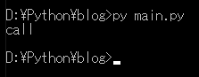
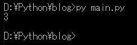
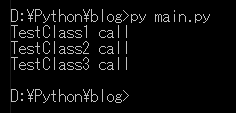
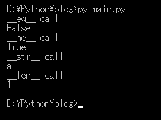

[Python] 13. クラス関数(class method)とダック・タイピング、そして特殊メソッド
こんにちは。明月です。
この投稿はPythonでクラス関数(class method)とダック・タイピング、そして特殊メソッドに関する説明です。
クラス関数(class method)
以前の投稿でPythonクラスと関数に関して説明したことがあります。
link - [Python] 12. クラス(Class)を使う方法
link - [Python] 06. 関数(function) - インライン関数、callbak、ラムダ(lambda)そしてクロージャ
クラスで関数を使う方法は一番のパラメータでselfを入れるとクラスをインスタンス生成した後関数を呼び出せます。
# クラス生成
class TestClass():
# コンストラクタ
def __init__(self):
# 内容は空
pass
# 関数
def call_function(self):
# コンソール出力
print("call")
# インスタンスを生成
obj = TestClass()
# 関数を呼び出す。
obj.call_function()

Pythonではクラス関数という関数があります。他のプログラム言語ならstatic関数ということです。
static関数はインスタンスを生成がしなくて呼び出せるものです。
# クラス生成
class TestClass():
# この変数はstatic変数です。変数の中でアンダーバー(_)が二つあるのでprivateタイプになる。
__count = 0
def __init__(self):
# static変数はインスタンスと関係ないデータなのでselfでアクセスすることではない。
TestClass.__count = TestClass.__count + 1
# 関数
def call_function(self):
# コンソール出力
print("call")
# classmethodデコレーターを使う。そうするとクラス関数、つまりstatic関数になる。
# パラメータでselfがない
@classmethod
def generated_class_count(cls):
# コンソール出力
print(cls.__count)
# インスタンスを生成するたびに__countは1ずつ増加する。
obj = TestClass()
obj1 = TestClass()
obj2 = TestClass()
# 呼ばれた個数を出力
TestClass.generated_class_count();

ダック・タイピング
ダック・タイピングはC＃のdynamic変数と似ているし、javascriptのコールバック関数と似ています。
# TestClass1クラスの中でcall_function関数がある。
class TestClass1():
# コンストラクタ
def __init__(self):
pass
# 関数
def call_function(self):
# コンソール出力
print("TestClass1 call");
# TestClass2クラスの中でcall_function関数がある。
class TestClass2():
# コンストラクタ
def __init__(self):
pass
# 関数
def call_function(self):
# コンソール出力
print("TestClass2 call")
# TestClass3クラスの中でcall_function関数がある。
class TestClass3():
# コンストラクタ
def __init__(self):
pass
# 関数
def call_function(self):
# コンソール出力
print("TestClass3 call")
# objのcall_function関数を呼び出す。
def call_function(obj):
# objのcall_function関数を呼び出す。
obj.call_function()
# インスタンスを生成
obj1 = TestClass1()
obj2 = TestClass2()
obj3 = TestClass3()
# 各インスタンスをcall_functionを通ってクラスのcall_function関数を呼び出す。
call_function(obj1)
call_function(obj2)
call_function(obj3)

Pythonではインターフェイスが存在しないからダック・タイピングで多態性を実現したようです。でも、インタフェースがない環境でダック・タイピングを作成すると逆にバグの発生や可読性が悪くなると思います。
個人的な考えですが上のソースみたいに作成して、後にTestClass3クラスのcall_functionを変更したり削除したらエラーが発生する可能性があります。個人的な考えです。
特殊メソッド
特別なメソッドは、JavaやC＃なら最上位クラスObjectで宣言された基本関数の意味です。つまり、ToString（）と同様のことでしょう。
link - https://docs.python.org/3/reference/datamodel.html#special-method-names
特殊メソッドは種類がすごく多いですが、よく使う__eq__と__ne__、__str__、__repr__、__len__を説明します。
# クラス生成
class TestClass():
# コンストラクタ
def __init__(self, data):
# メンバー変数設定
self.data = data
# __eq__関数
def __eq__(self, obj):
# コンソール出力
print("__eq__ call")
# 結果(メンバー変数比較)
return self.data == obj.data
# __ne__関数
def __ne__(self, obj):
# コンソール出力
print("__ne__ call")
# 結果(メンバー変数比較)
return self.data != obj.data
# __str__関数
def __str__(self):
# コンソール出力
print("__str__ call")
# 結果(メンバー変数出力)
return str(self.data)
# __len__
def __len__(self):
# コンソール出力
print("__len__ call")
# 結果(メンバー変数長さ)
return len(self.data)
# インスタンスを生成
obj1 = TestClass("a")
obj2 = TestClass("b")
# __eq__が呼び出す。
print(obj1 == obj2)
# __ne__が呼び出す。
print(obj1 != obj2)
# __str__が呼び出す。
print(obj1)
# __len__が呼び出す。
print(len(obj1))

特殊メソッドは演算子を再定義する機能があります。よく使うとソースステップをたくさん減らせると思います。
ここまでPythonでクラス関数(class method)とダック・タイピング、そして特殊メソッドに関する説明でした。
ご不明なところや間違いところがあればコメントしてください。
- [Python] 20. stringフォマード(Formatting)と補間法(interpolation)2020/06/23 19:03:21
- [Python] 19. 非同期IOのasync/await(asyncio)を使う方法2020/06/22 18:10:12
- [Python] 18. ネットワーク(Socket)通信する方法2020/06/18 19:53:56
- [Python] 17. スレッド(Thread)とロック(lock)、そしてデッドロック(deadlock)2020/06/18 00:19:45
- [Python] 16. IO(ファイル読み取り、書き込み)を扱う方法2020/06/16 18:37:00
- [Python] 15. クラスを継承する方法2020/06/15 18:20:07
- [Python] 14. クラスプロパティ(Property)2020/06/12 17:45:13
- [Python] 13. クラス関数(class method)とダック・タイピング、そして特殊メソッド2020/06/11 19:42:29
- [Python] 12. クラス(Class)を使う方法2020/06/10 19:33:33
- [Python] 11. デコレーター（Decorator）を使う方法2020/06/09 17:27:18
- [Python] 10. モジュールとパッケージ(import)2020/06/08 19:07:50
- [Python] 09. 例外処理する方法2020/06/05 17:11:47
- [Python] 08. ジェネレータ(Generator)2020/06/04 18:46:08
- [Python] 07. globalとnonlocal2020/06/03 20:34:49
- [Python] 06. 関数(function) - インライン関数、callbak、ラムダ(lambda)そしてクロージャ2020/06/02 20:51:22
- [CentOS] Linux環境(CentOS)でCassandra(NoSQL DB)をインストールする方法(DBeaverブラウザでNoSQL使い方)2021/11/12 17:33:58
- [Design pattern] 3-3. コマンドパターン(Command pattern)2021/11/05 17:01:42
- [Window] apache-tomcatでロードバランシング(Load balancing)する方法とセッションクラスタリング（セッション共有）2021/11/05 16:58:45
- [Window] Apacheでmod_jkとmod_proxyの差異、apacheでtomcatのwebsocketのプロキシフォーワードする方法2021/11/05 16:55:05
- [PHP] Apache環境の同じホスト中でPHPとJava(Servlet)を同時に起動、運用する方法2021/11/05 16:52:04
- [C#] 61. ウィンドウフォーム(Window form)でスレッド(Thread)を使い方、クロススレッド問題解決2021/11/04 19:29:51
- [Design pattern] 3-2. 責任の連鎖パターン(Chain of responsibility pattern)2021/11/04 19:27:58
- [Design pattern] 3-1. ストラテジーパターン(Strategy pattern)2021/11/03 18:38:52
- [C#] 60. ウィンドウフォーム(Window form)のイベント設定する方法2021/11/02 21:18:08
- [Design pattern] 2-7. ファサードパターン(Facade pattern)2021/11/02 19:32:31
- [Design pattern] 2-6. プロキシパターン(Proxy pattern)2021/11/01 19:42:44
- [Design pattern] 2-5. フライウェイトパターン(Flyweight pattern)2021/10/29 19:48:27
- [C#] 59. ウィンドウフォーム(Window form)にコントロール(Control)を使い方法2021/10/29 19:45:43
- [Design pattern] 2-4. デコレーターパターン(Decorator pattern)2021/10/28 20:11:13
- [C#] 58. ウィンドウフォーム(Window form)を作成する方法、そしてウィンドウメッセージとキュー2021/10/27 20:35:44